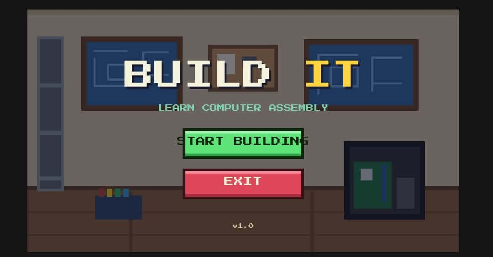
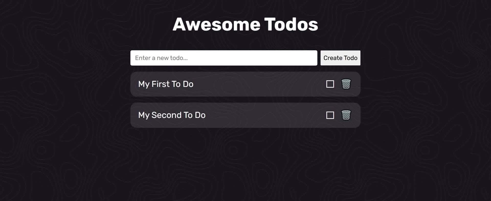
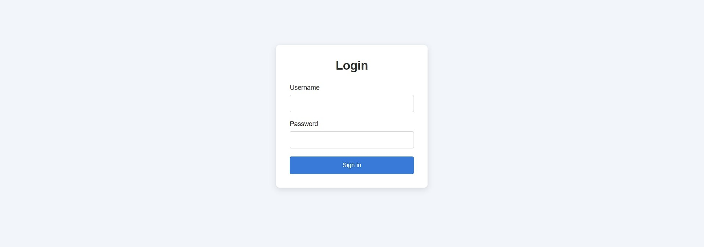

01 — 03
Selected work.


A LITTLE ABOUT ME
Making the digital
feel a little more human.
I’m a designer and developer who enjoys turning good ideas into clear, useful experiences. I believe in thoughtful details, honest collaboration, and keeping things simple.
WHAT I DO
- Web design
- Development
HAVE A PROJECT IN MIND?